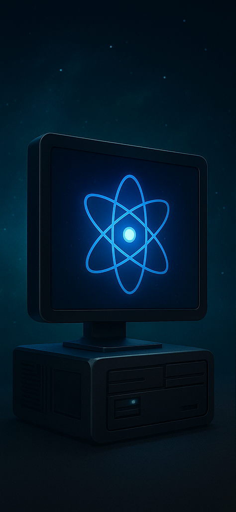
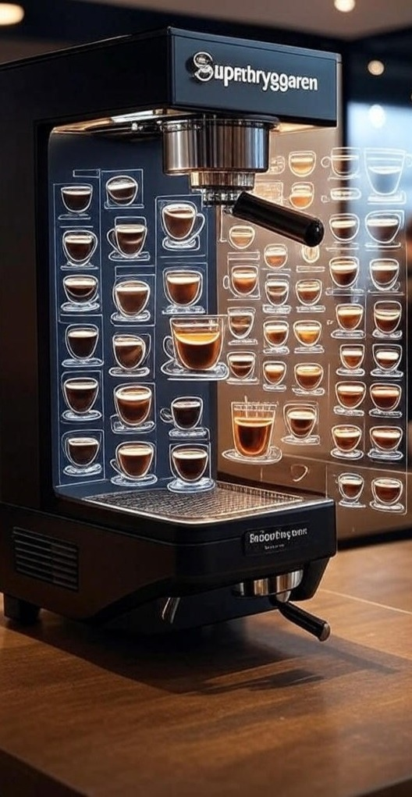
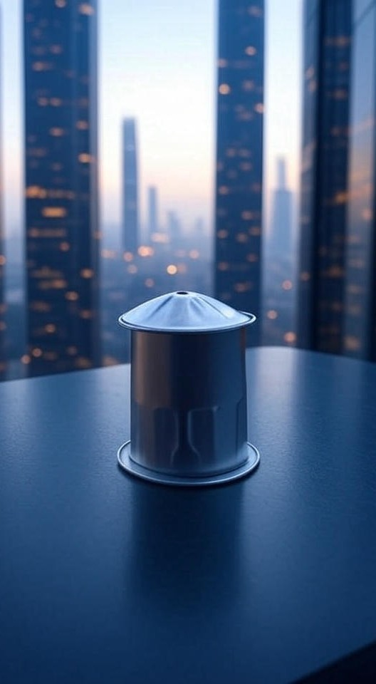

I en framtid där varje sekund räknas som en droppe av det finaste kaffet, introducerar Superdatorn en revolutionerande kraft i beräkning och AI. Denna supermaskin, driven av kvantliknande algoritmer, optimerar inte bara komplexa simuleringar utan kan också förutsäga din perfekta kaffeblandning baserat på dina dagliga vanor. Tänk dig att vakna upp till en AI som brygger din morgonkaffe innan du ens tänkt tanken! Med Superdatorn blir världen en plats där intelligens flödar lika smidigt som espresso från en futuristisk bryggare, och varje beräkning känns som en adrenalinkick av koffein.

Välkommen till morgondagens kaffeparadis med Superböna, appen som förvandlar din smartphone till en portal av oändliga kaffeupplevelser! I en värld där kaffet inte bara är en dryck utan en livsstil, låter Superböna dig utforska virtuella kaffeplantager, rekommendera personliga recept med AI-precision och till och med simulera doften av nyrostade bönor genom augmented aromateknik. Tänk dig att swipa fram din drömkaffe medan appen förutspår globala kaffetrender – det är som att ha en barista i fickan som aldrig tar paus, och varje uppdatering känns som en ny våg av caffeinberikad innovation!

Steg in i en epok där verkligheten blandas med det fantastiska genom Superglasögon, de ultimata augmented reality-glasögonen som förhöjer varje stund! I denna futuristiska vision projicerar glasögonen inte bara digitala lager över världen, utan integrerar även kaffekunskap i realtid. Se en kaffekopp och få omedelbara recept, bryggtips eller till och med virtuella smakprov som dansar framför dina ögon som holografiska bönor. Med Superglasögon blir vardagen en sci-fi-saga där du navigerar genom städer med overlayade kaffeguider, och varje blick känns som en klyschig superhjälteupplevelse, boostad av oändlig koffeinenergi!

I en värld där tid är lika dyrbar som den sista droppen av en perfekt bryggd espresso, presenterar Superbryggaren framtidens kafferevolution! Denna hyperintelligenta kaffemaskin, utrustad med neurala nätverk och molekylär smakanalys, skräddarsyr varje kopp efter din sinnesstämning och biometriska data – allt medan den projicerar holografiska kaffevisualiseringar över din köksbänk. Tänk dig en maskin som inte bara brygger kaffe utan också komponerar en symfoni av smaker, som om varje kopp vore en resa till kaffegalaxens hjärta. Superbryggaren gör varje morgon till en episk uppvaknandestund, med en koffeinkick som känns som att surfa på en digital våg!

Välkommen till framtiden med KaffeKapsel, den revolutionerande kaffekapseln som förvandlar varje kopp till en smakexplosion! Denna kompakta, futuristiska kapsel, designad för din kaffemaskin, är fylld med exklusiva kaffebönor som bryggs till perfektion – från etiopisk single-origin till en kaffe med en twist av rymdäventyr som månstoftlatte. Med avancerad teknologi låser kapseln upp en ny nivå av aromer och smaker, som om varje bryggning vore en resa genom en kaffedröm. KaffeKapsel gör varje morgon till en klyschig sci-fi-upplevelse, där du vaknar till en doft som bär dig in i en ny era av koffeinbaserad lyx!